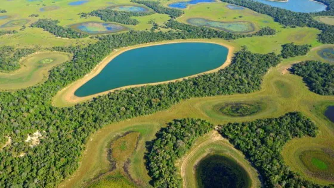

O Pantanal é uma das maiores áreas alagáveis do planeta e abriga uma rica biodiversidade. As queimadas têm se tornado uma grande ameaça à sua preservação. Vamos entender o impacto desse problema e como podemos ajudar.
